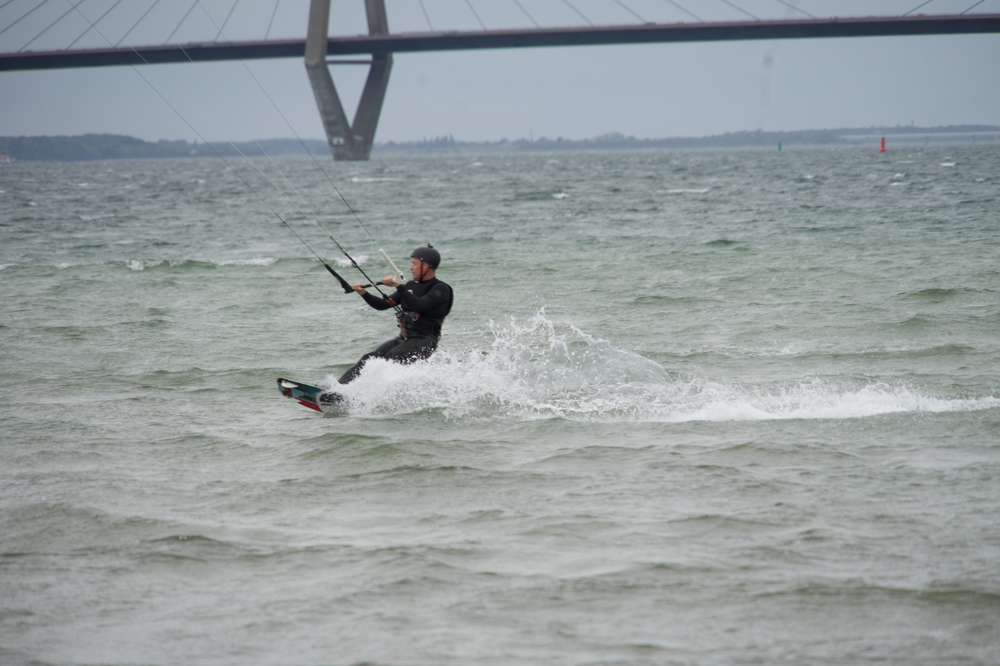
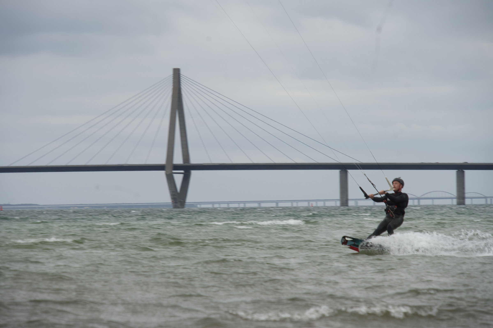
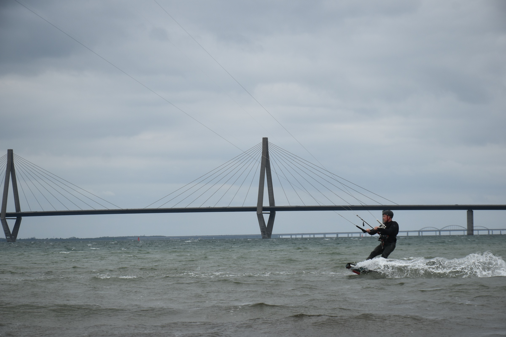
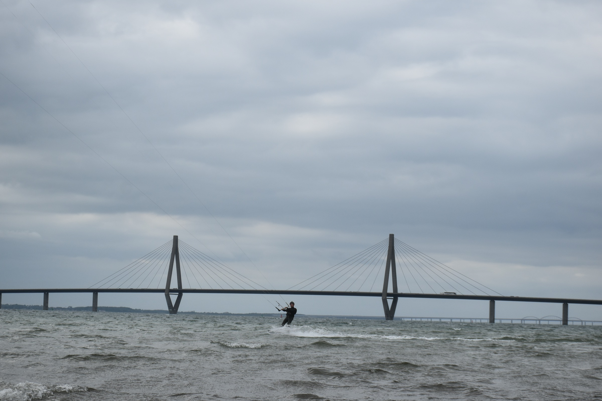
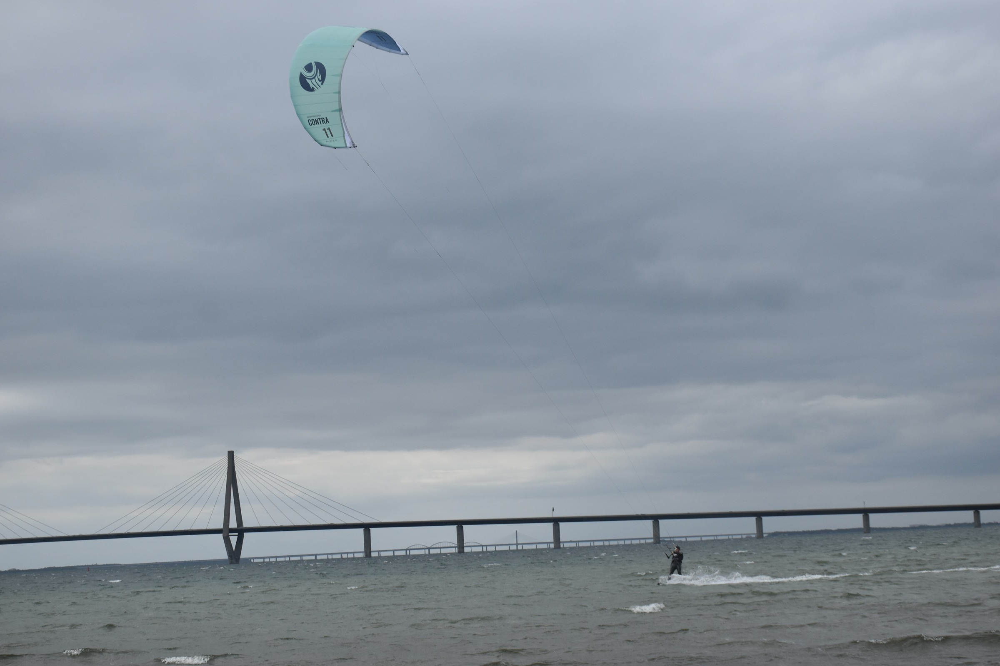
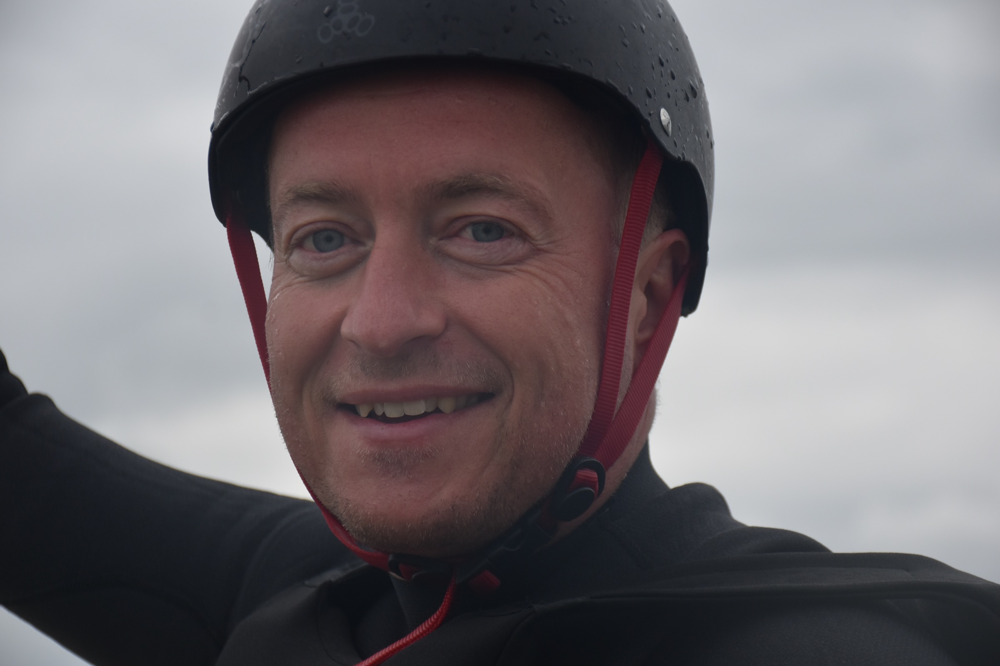
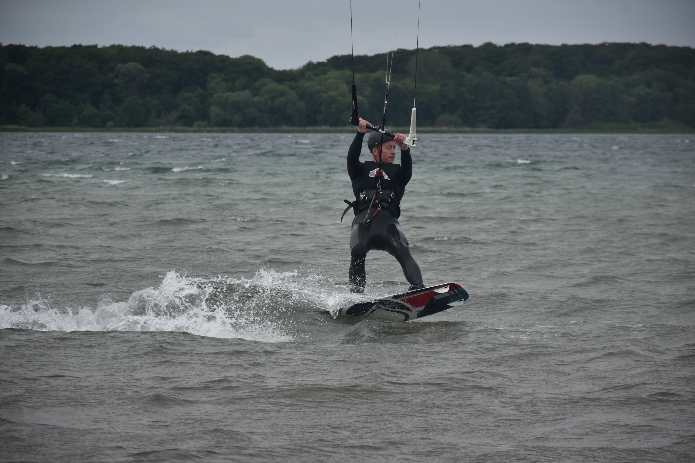
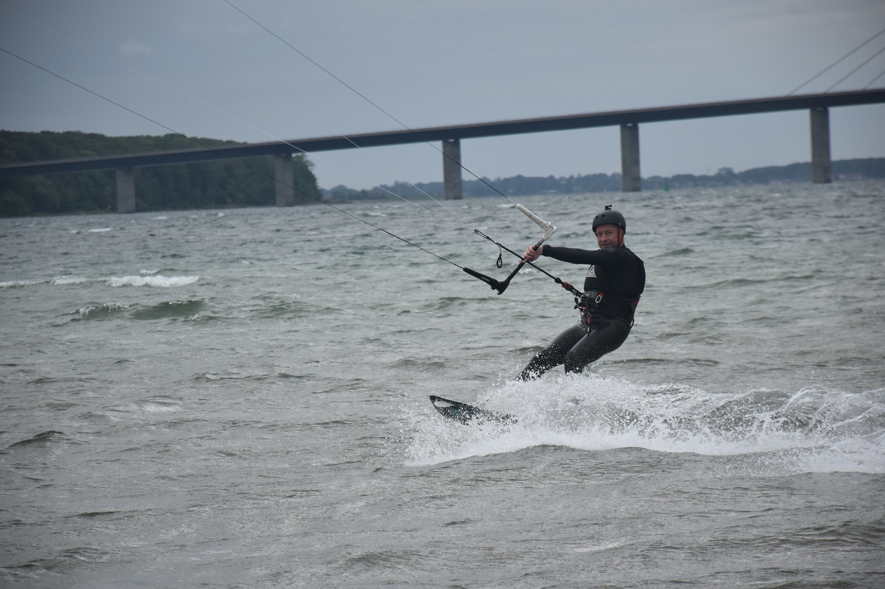
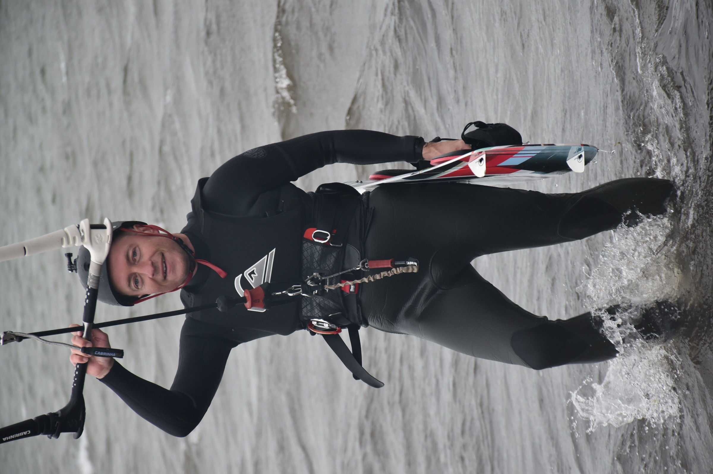

Kite Session · Storstrømmen · Denmark
30th May, 2026 — Farø, Sjælland
55° 18' N · 11° 59' E · Wind SSW · Force 4–5
From a session of 459 photographs taken on the waters off Farø, these nine images stand apart — each telling a distinct story of wind, water and the Farø bridges. Two cameras, one location, one day on Storstrømmen.
The Selection

DSC05270.ARW · Sony Alpha · RAW
A hard carving turn captured at close range with the Sony — the board is throwing a curtain of white water, and the rider is leaning into the turn with real commitment. The right cable-stay pylon of Farøbroen fills the upper background, giving the image both drama and an unmistakable sense of place.
The combination of sharp rider, dynamic spray and the looming bridge geometry makes this the strongest single action frame in the collection. The Sony RAW file has considerably more dynamic range than the Nikon JPGs — the shadow detail in the wetsuit and harness can be fully recovered in post.
⚙ Being a RAW file, open in Lightroom or Capture One for best results. Lift shadows +30, add clarity +20, and consider a slight warm grade to bring out the green water.

DSC05340.ARW · Sony Alpha · RAW
The photographer panned with the rider, and the result is exactly what sports photographers chase: the rider relatively sharp and present, while the bridge deck and background register as a soft horizontal streak. The motion blur in the structure tells you — viscerally — that the board is moving fast.
Both Farøbroen and the older Storstrømsbroen are visible in the background, layered in soft depth, with the rider carving spray at the board and looking back over the shoulder. It is a rare frame where the technically imperfect execution becomes the entire point.
⚙ Resist the urge to sharpen. The blur is the asset. A horizontal crop to 16:9 or 2:1 panoramic ratio will amplify the sense of lateral speed.

DSC_0170.JPG · Nikon
The definitive location shot. Both cable-stay pylons of Farøbroen span the full width of the frame, sharp from edge to edge, while the rider carves a strong arc of white spray in the lower right. In the far background, the older Storstrømsbroen adds a second bridge silhouette — extraordinary depth for a wide shot.
The overcast Nordic sky creates soft, even light that keeps the bridge crisp without blown highlights. Anyone who knows Denmark will recognise this instantly; anyone who does not will marvel at the scale.
⚙ Works beautifully as a wide horizontal poster. A slight S-curve and modest clarity boost to the bridge cables will make this exceptional.

DSC_0195.JPG · Nikon
A more deliberately composed bridge shot: the rider is centred almost exactly between the two cable-stay pylons, which act as a natural architectural frame. The eye is drawn immediately through the "gateway" to the rider below, then upward through the converging stay cables to the dramatic cloud formation above.
Where No. III is about the location, this image is about geometry — the interplay between the man-made span and the tiny human figure beneath it. A strong choice if a poster needs to convey both scale and human context.
⚙ Ideal for a tall A2 or square crop pulling the frame down so the pylons dominate. Pairs beautifully as a diptych with No. I.

DSC_0300.JPG · Nikon
The only shot in the selection that captures all three defining elements in a single frame: the mint-coloured Contra 11 kite large and vivid in the upper half, the rider small below, and Farøbroen spanning the horizon between them. The result reads almost like a logo or event poster in its graphic simplicity.
The mint kite against the grey sky pops with exactly the colour contrast a poster needs. The sky also provides a generous canvas for title typography — date, location, or an event name can sit cleanly in the upper-left quadrant.
⚙ Consider a very subtle warm grade to make the kite colour sing. The upper-left sky is ideal for overlaid title text.

DSC_0379.JPG · Nikon
A tight close-up with perfect sharp focus on the rider's face — rain-spotted helmet, bright blue eyes, and a grin that needs no caption. The grey sky provides a seamless backdrop that keeps every detail of the expression.
Where the other five shots are about the location, the kite, or the speed, this one is about the person. It is the image to use on a personal poster, an event flyer, or as a companion inset alongside one of the wide bridge shots.
⚙ Crop to a 4:5 portrait ratio and lift shadow detail slightly. Pairs as a strong diptych alongside No. III or No. IV.

DSC_0342.JPG · Nikon
The only spray shot in the selection where the bridges are absent entirely. The green forested shoreline stretches across the background in warm soft focus, and the board is throwing a full wing of white water off a clean carving turn. Without the bridge geometry competing for attention, every gram of energy lands on the rider.
The mood here is different — more open sea, more free. It pairs beautifully as a counterpoint to the bridge-heavy shots, and would anchor a diptych with No. I or No. II where the contrast between "place" and "pure speed" is the editorial point.
⚙ The green treeline handles a subtle warm push extremely well. A slight vignette keeps the eye locked on the spray and rider.

DSC_0271.JPG · Nikon
A big open smile caught mid-ride — the rider is looking directly into the lens while actively carving, with real spray coming off the board and Farøbroen stretching across the background. It is the frame that answers the question every viewer asks of an action shot: are you actually enjoying this?
The combination of close framing, readable expression and genuine motion is rare in water-sports photography. This is the human soul of the session — and unlike the portrait (No. VI), it was taken at full speed.
⚙ Works brilliantly as the lead image on any personal poster. The bridge provides location grounding without dominating. A slight crop to 4:3 tightens the composition.

DSC_0377.JPG · Nikon
A close-up in the shallows: board tucked under one arm, kite bar raised, eyes bright, and a grin that says exactly how that last run went. The choppy grey water fills the background, keeping the focus squarely on the rider's face and energy.
Different in character from both the portrait (No. VI) and the mid-ride smile (No. VIII) — this one captures the moment between rides, the instinctive look back toward the beach photographer. It is raw, unposed, and completely alive.
⚙ Ideal as an inset or companion image. The portrait orientation makes it a natural bookend alongside one of the wide horizontal landscape shots.